Alexandra Veremeychik, John Quattrini, Charles Ritz, Selam Fesseha
Dr. Vanessa Frias-Martinez
AI Adoption Clinic: Values-Centered AI for Community Organizations
Spring 2026
College of Information Studies
May 6, 2026
Who is participating in Bowie’s ice skating lesson programs, as well as ice skating, basketball, and tennis summer camps?
How does participation vary by geography, neighborhood demographics, and accessibility?
To what extent do participation patterns in City of Bowie recreation programs reflect equitable access across geographic, demographic, and socioeconomic groups, and what factors may shape differences in participation across program types?
| Variables | Geography | Source |
|---|---|---|
| Customer #, Activity Name, Age, Difficulty | Individual | City of Bowie |
| Proportion White/Black/Latino/Asian | Census Block | 2020 US Census |
| Proportion below poverty line/in deep poverty/near poverty, Proportion Households without Vehicle | Census Block Group | 2024 American Community Survey 5-year Estimates |
| Proportion that Speak only English at Home | Census Tract | 2024 American Community Survey 5-year Estimates |
| Driving Distance and Estimated Travel Time (Driving) | Individual | City of Bowie and Open Source Routing Machine (OSRM) |
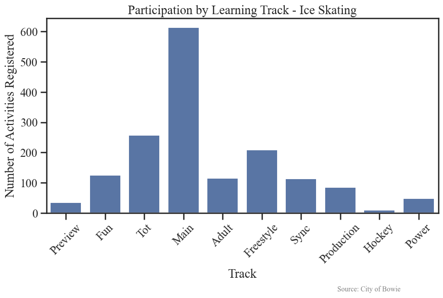
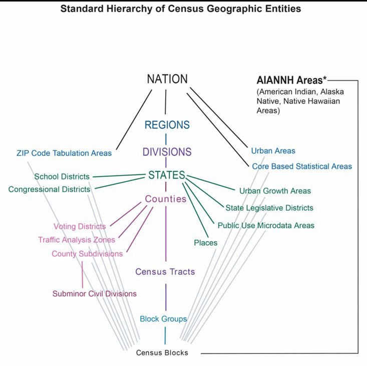
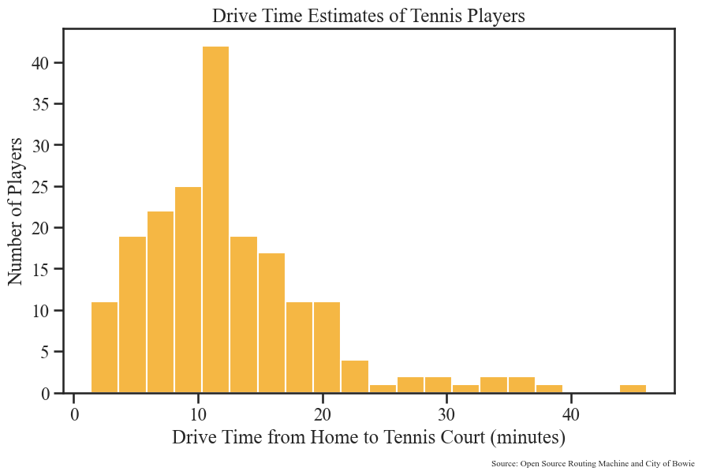
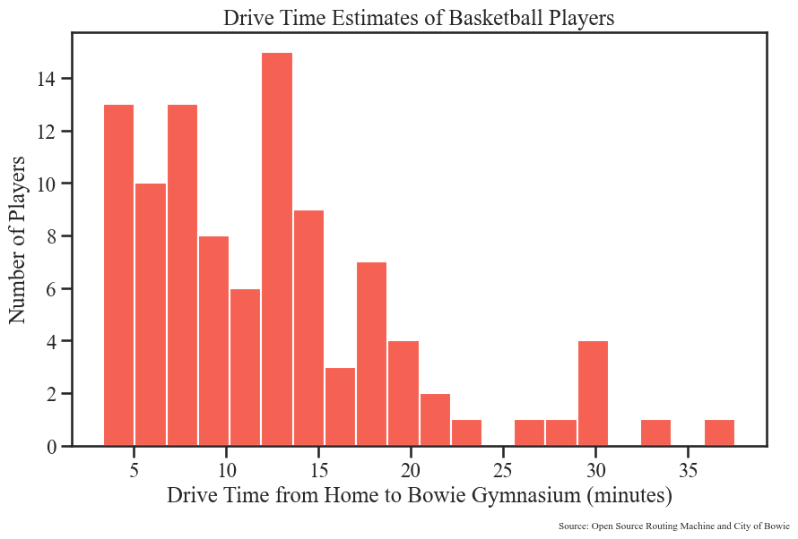
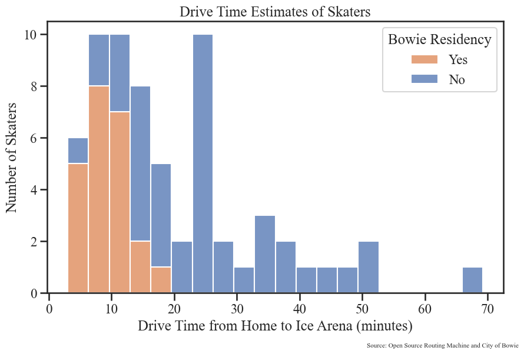
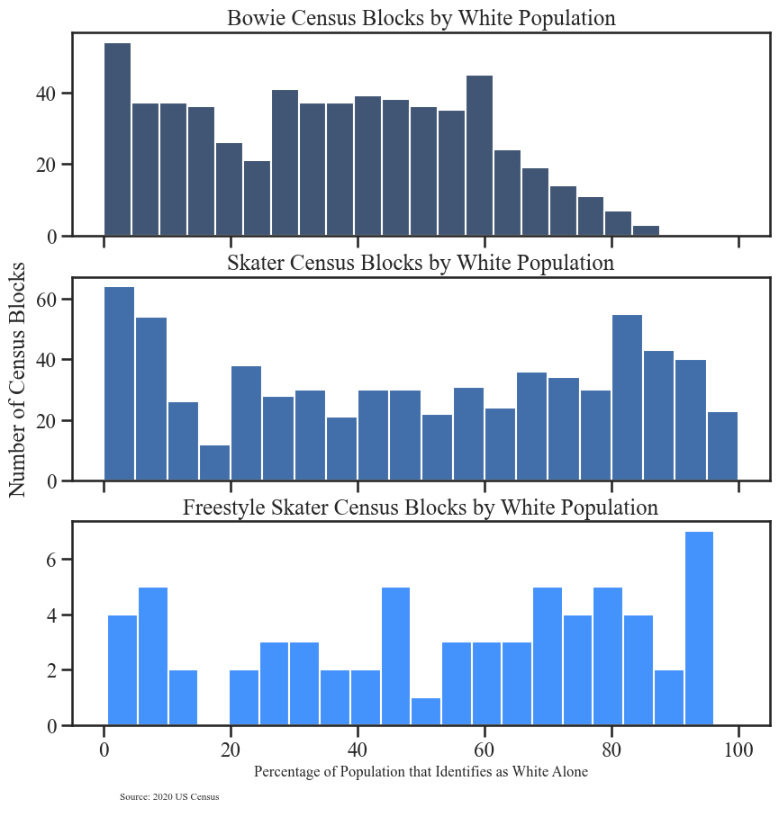
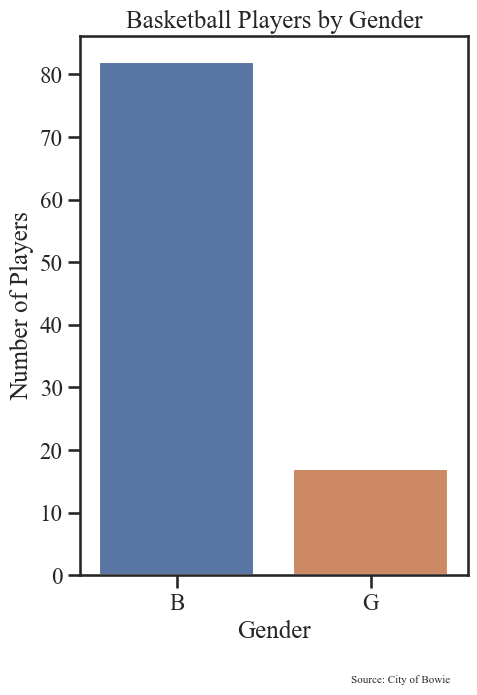
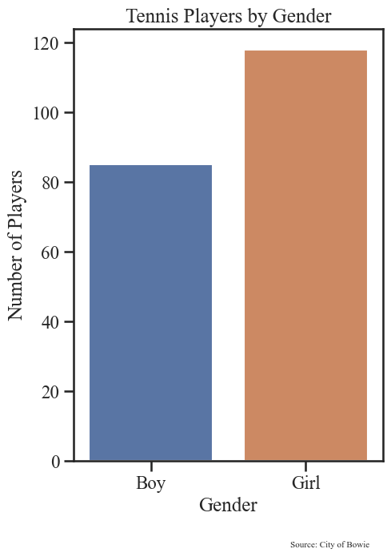
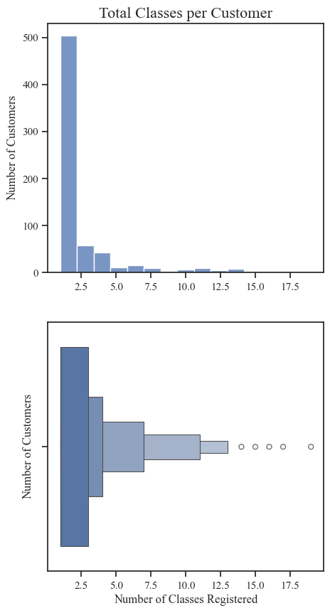
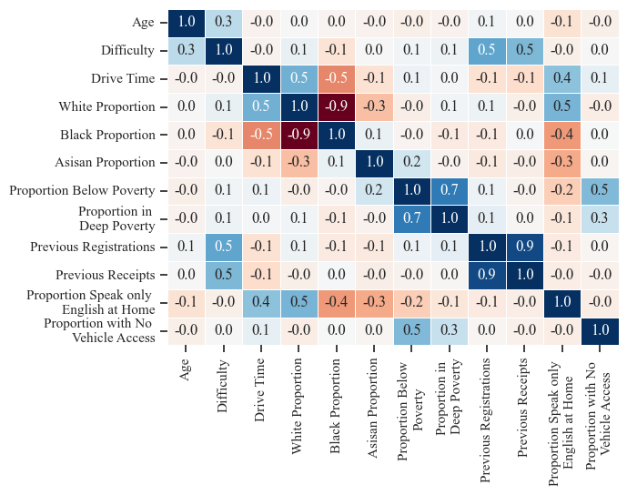
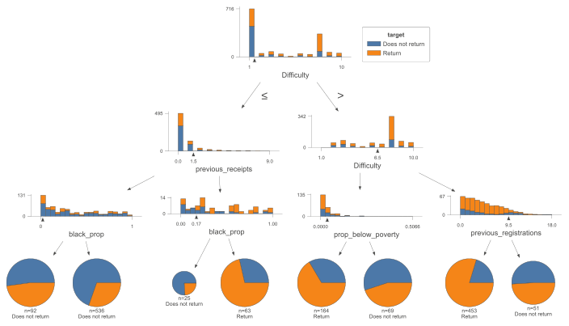
| Data Consistency | Sample Size | Timing and Retention | Neighborhood-Level Data | Accessibility Estimates |
|---|---|---|---|---|
| Program datasets vary in size, structure, and detail | Small datasets limit subgroup comparisons Modeling results may be unstable or sensitive to over-fitting | Records lack direct timestamps Receipt numbers were used as a proxy for registration order Records at the beginning and end may be improperly categorized | Census and ACS data describe areas, not individuals Results may change depending on the geographic unit used | Drive-time estimates do not capture traffic, transit, scheduling, etc. |
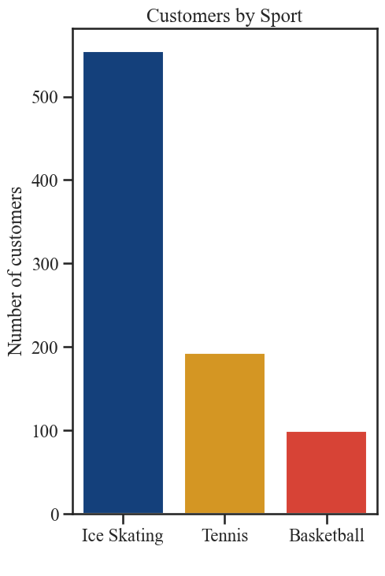
Bowie Athlete Map
Special thank you to Peter Faragasso and the City of Bowie
Presentation & Report